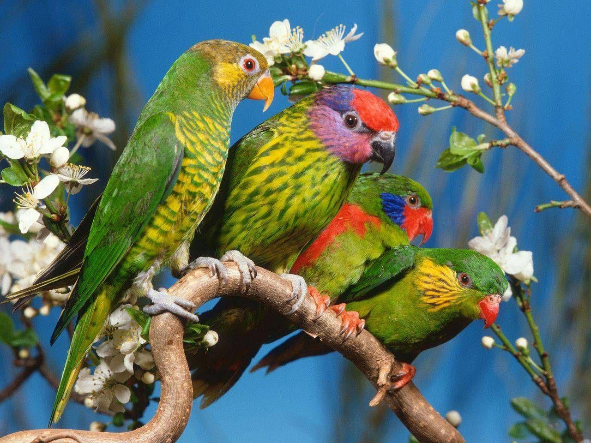
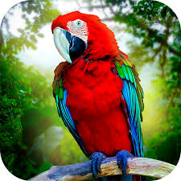

Birds are very special animals that have particular characteristics which are common amongst all of them, For instance, all of them have feathers, wings and two legs. Similarly, all birds lay eggs and are warm-blooded. They are very essential for our environment and exist in different breeds.
>
There are different types of birds that exist which vary in characteristics. For instance, there are penguins that cannot fly. Further, there are birds that are known for their intelligence like Parrots and Corvidae.
Moreover, we have peacocks which are beautiful and symbolize rain and good weather. Next, there are bats and vultures as well. Birds connect very closely to the environment and are quite intuitive.
They are quite social and enjoy singing as well. Birds enjoy the freedom of moving anywhere without boundaries.

My favourite bird is the parrot. It is a colourful bird that is present in many parts of the world. It comes in many shapes, sizes and colours. Parrots are famous for having vivid colours.
Some have a single, bright colour while others have a rainbow of different colours. Parrots are usually small and medium in size that mostly eats seeds, nuts and fruits. The lifespan of a parrot depends on its species.
Parrots are highly intelligent and thrive at their best when they are free and not captured in cages.
.jpg)
.jpg)